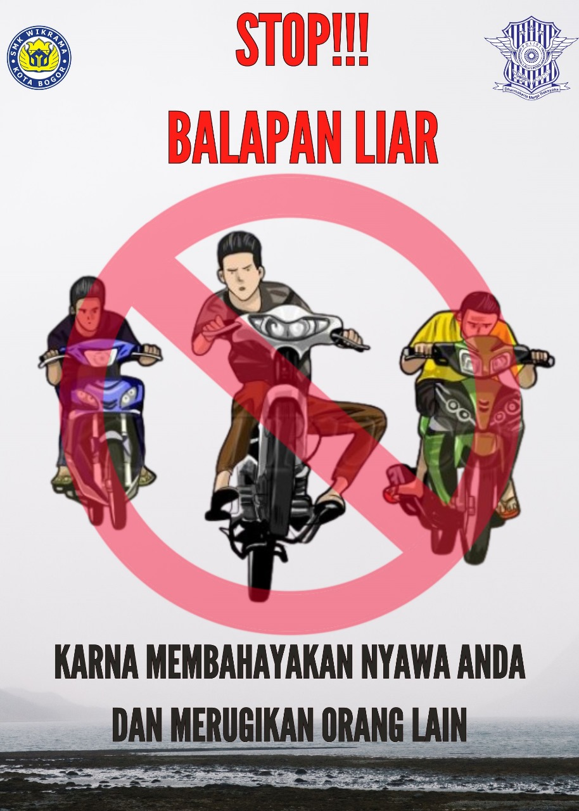

Balap liar adalah salah satu bentuk balapan yang digelar tanpa izin dari pihak berwenang. Balap liar umumnya diikuti oleh beberapa kelompok pemilik kendaraan, seperti mobil atau sepeda motor, yang telah dimodifikasi dan dilaksanakan di waktu-waktu tertentu, seperti pada saat dini hari saat lalu lintas kendaraan sepi. Balap liar termasuk kegiatan yang dikategorikan sebagai sebuah kejahatan.
Berikut adalah dampak negatif dari balap liar: Mengganggu kelancaran jalan raya Mengganggu Ketentraman masyarakat sekitar akibat suara knalpot, Merugikan orang tua dan Membuat orang tua khawati, Dapat memicu terjadinya tawuran antar geng motor, Sering terjadinya pelanggaran norma,Memicu terjadinya taruhan dan perjudian, Menyumbang angka kecelakaan lalu lintas, Membuang-buang waktu dan masa depan, Dampak terberat adalah kehilangan nyawa.
Berikut adalah beberapa langkah yang dapat diambil untuk mengurangi atau menghindari balapan liar: Penegakan Hukum yang Ketat, Penyuluhan dan Pendidikan, Penyediaan Area Resmi, Kerjasama dengan Komunitas Lokal, Program Pengembangan Masyarakat, Pengawasan Teknologi, Sosialisasi Anti-Balapan Liar.